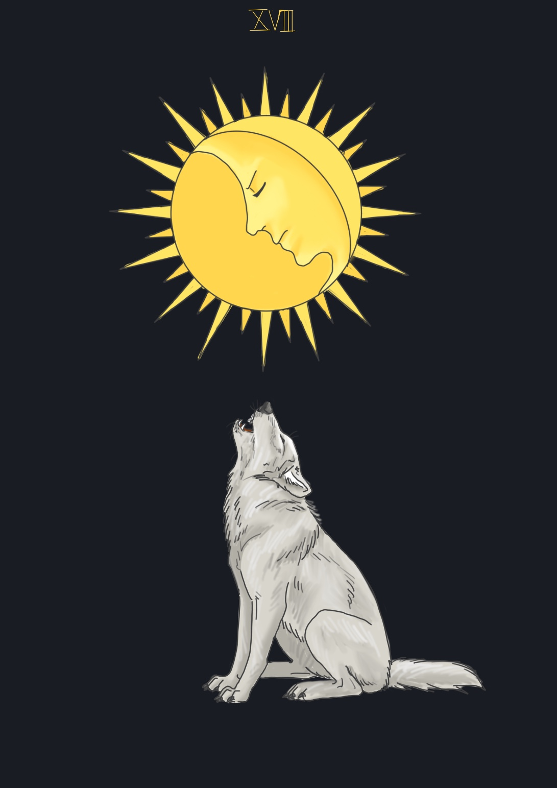

The moon
불가사의한 무의식의 심연, 내밀한 자의식, 낯설고 미묘함, 모호함, 초개인적인 세계, 혼란과 당혹감에 휩싸인 기다림, 생명의 원천.
이미 낯설고 미묘한 영역을 대비밀의 다른 두 카드 –고위 여사제와 운명의 수레바퀴-에서 만났었다.
고위 여사제를 통해 광대는 개인적 심연의 직관, 즉 일상 생활의 하부에 존재하는 내밀한 자기를 인식하게 되었다.
그리고 운명의 수레바퀴를 지배하는 모이라이를 통해 운명의 힘을 경험하였다.
그가 겪은 운명의 갑작스러운 변화는 불가시의 법칙 도는 내재된 목적적 패턴을 드러낸다.
헤카테의 이미지는 무의식의 대양을 체험하게 될 것을 암시한다.
이 집단무의식으로부터는 개인뿐만 아니라 전체 생명의 것이 나타난다.
헤카테는 개인적인 심연 그 이상을 묘사하고 있으며, 생명 자체에 내재된 여성의 원리를 표상한다.
그리고 세 개의 얼굴 세 개의 월상(月相)은 천상과 지상, 그리고 하계를 지배하는 그녀의 다원적 힘을 상징한다.
심리학에 의하면 위대한 신화와 종교적 심벌들, 예술 작품들은 그 탄생의 원천으로 인간 심상의 대양을 삼는다.